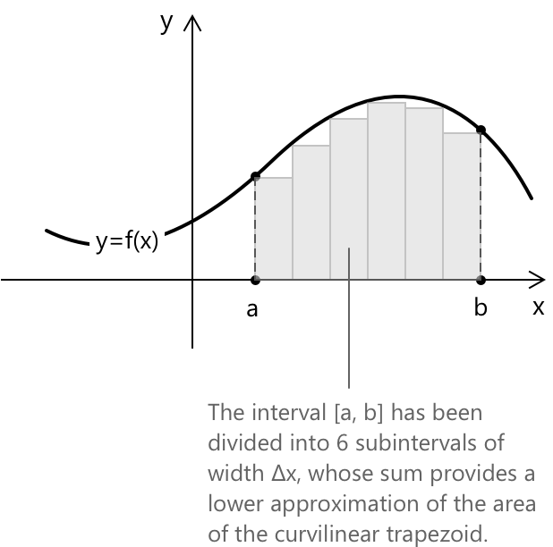
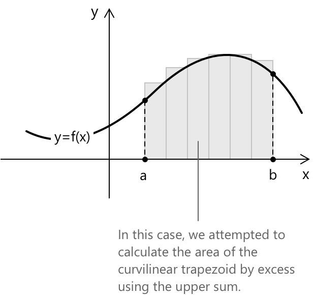
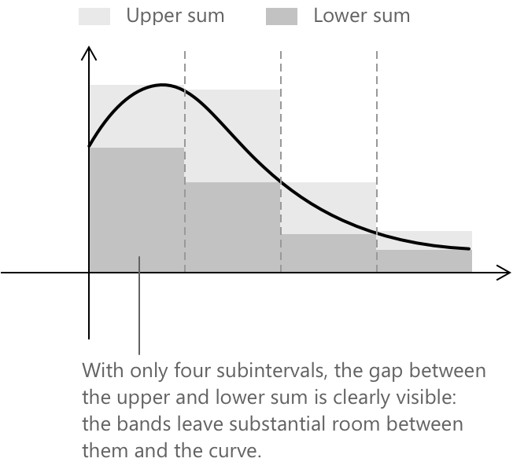
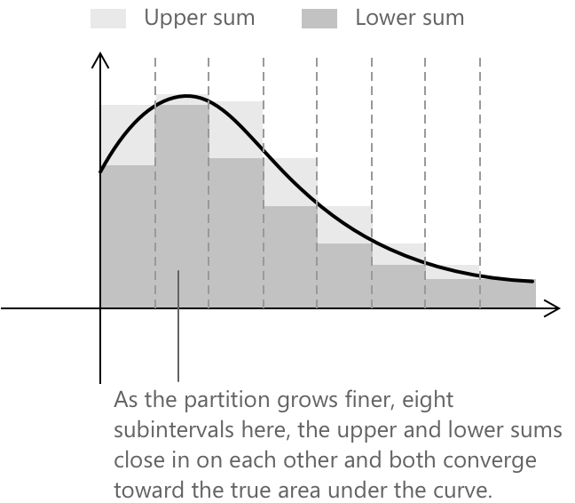

Критерії інтегровності за Ріманом
Вступ
Інтеграл Рімана створений для вимірювання чистої площі під обмеженою функцією на замкненому проміжку шляхом наближення її прямокутниками. Тонкий момент полягає не в обчисленні інтеграла після того, як він існує, а у визначенні того, коли граничний процес є правильно визначеним. Ця сторінка містить найкорисніші критерії інтегруваності за Ріманом у формі, яку легко застосувати, коли ви зустрічаєте функцію, що не є очевидно неперервною.
Якщо ви хочете спочатку дізнатися про означення та основні властивості визначеного інтеграла, дивіться: Визначені інтеграли.
Розбиття, верхні суми, нижні суми
Нехай \( f:[a,b]\to\mathbb{R} \) буде обмеженою. Розбиттям \( P \) проміжку \( [a,b] \) називається скінченна сукупність точок
\[P={x_0,x_1,\dots,x_n}\] \[a=x_0<x_1<\cdots<x_n=b\]
На кожному підпроміжку \( [x_{i-1},x_i] \) ми фіксуємо, наскільки високо і низько може досягати функція. Оскільки \( f \) обмежена, обидві величини визначені:
\[M_i=\sup_{x\in[x_{i-1},x_i]} f(x)\] \[m_i=\inf_{x\in[x_{i-1},x_i]} f(x)\]
- \( M_i \) — це найменша верхня межа \( f \) на цьому підпроміжку (найменше значення, яке все ще є принаймні таким самим або більшим за кожне значення, яке \( f \) набуває там).
- \( m_i \) — це найбільша нижня межа (найбільше значення, яке все ще не перевищує жодного значення, яке \( f \) набуває там).

На діаграмі вище показано нижню суму: кожен прямокутник побудований за допомогою інфімуму \( f \) на його підпроміжку, тому кожен прямокутник повністю лежить під кривою. Жодна частина жодного прямокутника не виступає над нею. На діаграмі нижче показано верхню суму: тут кожен прямокутник використовує супремум, тому прямокутники виходять за межі кривої та покривають більшу площу, ніж є насправді. Справжня площа під кривою лежить десь між цими двома значеннями.

У міру того як розбиття стає дрібнішим, а підпроміжки скорочуються, прямокутники в обох сумах стають вужчими та численнішими, і ці два наближення змушені ставати все ближчими один до одного.
Коли \( f \) є неперервною, ці значення збігаються з фактичним максимумом і мінімумом на підпроміжку. Для загальної обмеженої функції використовуються sup та inf, оскільки максимум або мінімум можуть бути не досягнуті. Використовуючи \( M_i \) та \( m_i \), ми визначаємо верхні та нижні суми Дарбу:
\[U(f,P)=\sum_{i=1}^n M_i(x_i-x_{i-1})\] \[L(f,P)=\sum_{i=1}^n m_i(x_i-x_{i-1})\]
Два факти забезпечують цілісність усієї конструкції. По-перше, роздрібнення розбиття (додавання точок до нього) може лише зменшити верхні суми та збільшити нижні суми. По-друге, незалежно від того, яке розбиття ви оберете, нижня сума ніколи не перевищує верхню суму:
\[ L(f,P) \leq U(f,P) \]
Разом це означає, що в міру того як розбиття стають дрібнішими, верхні та нижні суми стискаються одна до одної. Коли вони зустрічаються в спільній границі, функція є інтегруемою, і ця границя є інтегралом.
Критерій Дарбу
Перед формулюванням критерію варто визначити два числа, які узагальнюють усі можливі верхні та нижні суми одночасно. Визначимо верхній та нижній інтеграли як:
\[U(f)=\inf_{P} U(f,P)\] \[L(f)=\sup_{P} L(f,P)\]
де інфімум та супремум беруться по всіх розбиттях \( P \) проміжку \( [a,b] \). Простими словами:
- \( U(f) \) — це найменше значення, до якого можна знизити верхні суми, обираючи дедалі дрібніші розбиття.
- \( L(f) \) — це найбільше значення, до якого можна підняти нижні суми.
Можна показати, що нерівність \( L(f) \leq U(f) \) завжди виконується, незалежно від функції.
Обмежена функція \( f \) є інтегруемою за Ріманом на \( [a,b] \) тоді і тільки тоді, коли ці два числа збігаються:
\[ U(f) = L(f) \]
У такому разі їхнє спільне значення є інтегралом:
\[ \int_a^b f(x)\,dx = U(f) = L(f) \]
Це зручно як означення, але на практиці обчислити \( U(f) \) та \( L(f) \) безпосередньо важко. Наступне еквівалентне формулювання набагато корисніше, коли потрібно довести інтегруємості: обмежена функція \( f \) є інтегруемою за Ріманом на \( [a,b] \) тоді і тільки тоді, коли для будь-якого \( \varepsilon > 0 \) існує розбиття \( P \), таке що
\[ U(f,P) – L(f,P) < \varepsilon \]

Різниця стає зрозумілою при розгляді двох діаграм. При грубому розбитті кожен прямокутник достатньо широкий, щоб залишити помітний розрив між верхньою та нижньою межами. Звуження підпроміжків змушує обидві суми точніше слідувати за кривою, і простір між ними відповідно зменшується.

Іншими словами, завжди можна знайти розбиття, яке зблизить верхню та нижню суми настільки, наскільки забажаєте. Це той критерій, до якого варто звернутися, коли ви хочете довести інтегруємості, «стискаючи» дві суми одну до одної.
На кожному підпроміжку \( [x_{i-1},x_i] \) різниця \( M_i - m_i \) представляє область значень, які набуває \( f \) на цій частині проміжку, тобто її коливання на цьому відрізку. Пряме обчислення тоді показує, що:
\[ U(f,P) - L(f,P) = \sum_{i=1}^n (M_i – m_i)(x_i – x_{i-1}) \]
Це центральна ідея. Функція є інтегруемою, якщо ми можемо розділити проміжок на достатньо малі частини, щоб варіація функції на кожній частині давала лише незначну похибку в загальній сумі. Якщо ж, навпаки, функція продовжує неконтрольовано коливатися на кожному підпроміжку, незалежно від того, наскільки дрібним є розбиття, то ця умова не може бути виконана, і функція не є інтегруемою в сенсі Рімана.
Коли відомо, що функція є інтегруемою за Ріманом, Основна теорема числення (диференціального та інтегрального) надає головний інструмент для її обчислення.
Загальні достатні умови
Критерій Дарбу є основою, але на практиці більшість функцій, з якими ви стикаєтеся, підпадають під одну з трьох категорій, що гарантують інтегруємості без будь-яких прямих обчислень сум. Функція \( f \) на \( [a,b] \) є інтегруемою за Ріманом, якщо вона задовольняє будь-яку з наступних умов.
-
Якщо \( f \) є неперервною на \( [a,b] \), інтегруємості випливає з рівномірної неперервності: на замкненому обмеженому проміжку неперервність змушує коливання \( M_i – m_i \) бути рівномірно малими на кожному достатньо короткому підпроміжку, що і вимагає критерій Дарбу.
-
Якщо \( f \) є монотонною на \( [a,b] \), коливання на кожному підпроміжку зводиться до різниці значень на кінцях. Ці різниці телескопічно скорочуються при підсумовуванні по розбиттю, і загальну величину \( U(f,P) – L(f,P) \) можна зробити малою, просто взявши достатньо дрібну сітку.
-
Якщо \( f \) є обмеженою і має лише скінченну кількість точок розриву, кожну з них можна помістити в підпроміжок довільно малої довжини, тоді як функція залишатиметься неперервною та «добре поміркованою» всюди інде.
Ці три умови є незалежними: функція може бути монотонною, не будучи неперервною, і може мати скінченну кількість розривів, не будучи монотонною. Спільним для них є те, що жодна з них не дозволяє розривам накопичуватися щільно, і це є ключовим моментом.
Критерій множини точок розриву
Обмежена функція \( f:[a,b]\to\mathbb{R} \) є інтегруемою за Ріманом тоді і тільки тоді, коли її множина точок розриву має міру Лебега, що дорівнює нулю. Множина \( D \subset [a,b] \) має міру нуль, якщо для будь-якого \( \varepsilon > 0 \) можна покрити \( D \) зліченною сукупністю інтервалів, сумарна довжина яких менша за \( \varepsilon \). Точки розриву можуть бути приховані всередині інтервалів, які разом займають на дійсній прямій настільки малу частину, наскільки забажаєте. Два приклади показують, що це означає на практиці.
Міра Лебега — це стандартний спосіб призначення довжини підмножинам дійсної прямої. Для інтервалу \( [c,d] \) вона дорівнює \( d - c \). Множина має міру нуль, якщо її можна покрити інтервалами з довільно малою сумарною довжиною — вона не займає місця на прямій у будь-якому значущому сенсі. Скінченні та зліченні множини, такі як множина раціональних чисел, мають міру нуль.
Функція Діріхле визначається як:
\[ f(x) = \begin{cases} 1 & x \in \mathbb{Q} \\[6pt] 0 & x \notin \mathbb{Q} \end{cases} \]
Вона є розривною в кожній точці \( [a,b] \), отже, її множина розривів — це весь інтервал, який не має міри нуль. Вона не є інтегруемою за Ріманом. Кожен підінтервал містить як раціональні, так і ірраціональні числа, тому кожен \( M_i = 1 \) і кожен \( m_i = 0 \), що дає \( U(f,P) - L(f,P) = b - a \) для будь-якого розбиття \( P \), незалежно від того, наскільки воно дрібне.
Функція Томае визначається як
\[ t(x) = \begin{cases} 0 & x \notin \mathbb{Q} \\ \dfrac{1}{q} & x = \dfrac{p}{q} \text{ у найпростішому вигляді} \end{cases} \]
Вона розривна саме в раціональних точках і неперервна в кожній ірраціональній точці. Раціональні числа в \( [a,b] \) утворюють зліченну множину, а будь-яка зліченна множина має міру нуль. Отже, функція Томае є інтегруемою за Ріманом, і її інтеграл по будь-якому інтервалу дорівнює нулю, попри те, що вона розривна в нескінченній кількості точок.
Визначення інтегруваності за Ріманом
Коли ви стикаєтеся з обмеженою функцією \( f \) на \( [a,b] \) і вам потрібно вирішити, чи є вона інтегруемою за Ріманом, наступна послідовність перевірок зазвичай дозволяє швидко вирішити це питання.
- Якщо \( f \) неперервна на \( [a,b] \), то вона інтегруюча.
- Якщо \( f \) монотонна на \( [a,b] \), то вона інтегруюча.
- Якщо \( f \) має лише скінченну кількість точок розриву, то вона інтегруюча.
- Якщо точки розриву \( f \) утворюють множину міри нуль, то вона інтегруюча.
- Якщо \( f \) розривна на множині, яку неможливо зробити малою, покажіть, що \( U(f,P) – L(f,P) \) залишається обмеженим від нуля для будь-якого розбиття \( P \). Тоді \( f \) не є інтегруемою за Ріманом.
Вибрана література
-
University of California, Davis. The Riemann Integral
-
University of California, Davis. Lecture Notes: Riemann Integration
-
University of California, Berkeley. Notes on Riemann Integral